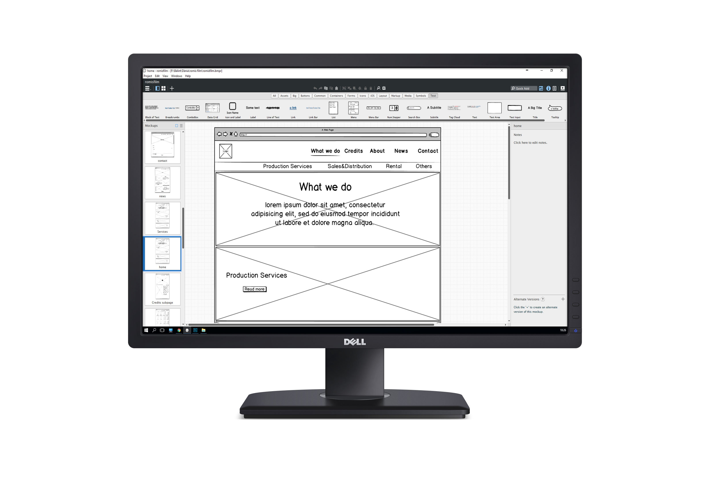

Studio Website structure

Developing navigational and content structure for Romis Film Group.
During my internship at Romis Film Group I've studied the website structure of major film studios to find industry specific design patterns and standards.
I've combined my research and collected ideas with the company's requirement to create a navigational and content structure for the website.